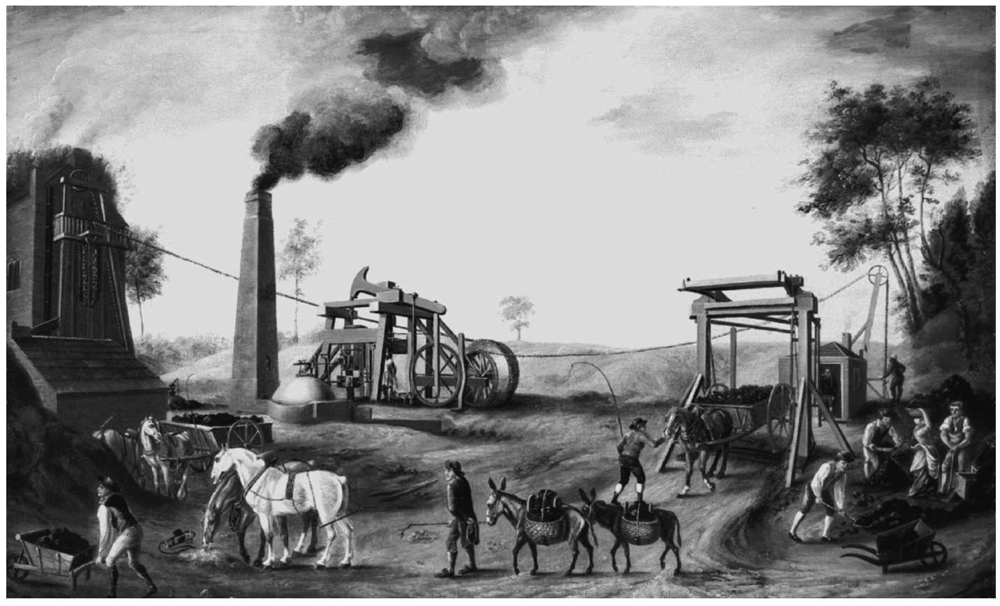

“工业革命”一词经常受到质疑，因为它用来描述的不是一个迅速、突然的变化，而是一个在18世纪以前已开始进行、并由于各种实际的目的而一直持续到现在的“革命”。显然，它不是通常意义上那种疾风骤雨般开始和结束并带来巨大变化的革命。
然而，事实仍旧是，18世纪80年代间，生产力有了惊人的进展，或者，如现在的经济学家所认为的，生产力有了“一个进入自驱动发展的起飞”。更明确地说，当时产生了一个机械化工厂体系，它以迅速降低的成本极大量地生产商品，以致它不再是依靠原有的需要，而是创造出其自身的需要。汽车制造业就是这种现在很普通但以往却无人知晓的现象的一个例子。不是存在于20世纪初的对汽车的需求创造了今天巨大的汽车制造业，而是制造廉价的T型“福特”牌汽车的能力刺激了现代对汽车的大量需求。
考察工业革命时出现的第一个问题和其时间的选择有关。为什么工业革命是在18世纪后期而不是在早100年或1000年时发生？答案在很大程度上可从海外大扩张之后欧洲惊人的经济发展中找到。这一发展如此显著，以致现在通常被称为“商业革命”。
商业革命的首要特点在于世界贸易的商品起了变化。16世纪以前，最重要的商品贸易是由东方运往西方的香料贸易和朝相反方向运送的金银贸易。但渐渐地，新的海外产品成为欧洲的主要消费品，并且其商业价值也在不断增长。这些产品包括新的饮料（可可、茶和咖啡）、新的染料（靛蓝、胭脂红和巴西苏木）、新的香料（多香果和香子兰）和新的食物（珍珠鸡、吐绶鸡以及其供应量已大大增长的纽芬兰的鳕鱼）。商业革命的另一个重要特点是贸易量显著增长。1715年至1787年间，法国从海外地区输入的进口商品增加了10倍，而出口商品增加了7倍至8倍。英国贸易也有了几乎同样惊人的增长——在1698年至1775年这一时期，进口商品和出口商品都增长到500%至600%之间。欧洲总的贸易在增长，但是，殖民地贸易正在其中占有一个愈来愈大的部分。例如，1698年，英国约15％的海运贸易是与其殖民地进行的，但是，到1775年，这一数字已上升到33％。此外，由于殖民地商品的再出口，法、英两国与欧洲其他国家的贸易也大大增长。
早期铁路上的一段旅程
世界上最初的两条铁路是从利物浦至曼彻斯特的，分别于1825年和1830年开通。女演员弗朗丝（范妮）·金伯尔幼年时曾在第二条铁路开通的那一年搭乘过，她对那段旅程作了如下描述。*
我父亲认识几位对这一事业（利物浦——曼彻斯特的铁路）最感兴趣的绅士，当斯蒂芬森提议进行15英里铁路的试运行时，他们以极大的善意邀请我父亲带着我与他们同行，并允许我坐在斯蒂芬森的身旁，我认为这真是我毕生最大的荣耀之一……他是一个面部表情非常严肃的人，肤色浅黑，面部特征十分明显……
有人向我们介绍了将要带着我们在铁轨上奔跑的小小发动机……这个总是让我想去拍拍它的、发着喷气声的小动物，现在就套在了我们的车厢上，斯蒂芬森先生带着我，和他一起坐在发动机的凳子上。我们以约10英里的时速开始了旅程。这匹“蒸汽马”对高低起伏的山路不是很适应，铁路必须保持一定的水平，因此，有时候看起来似乎沉到了地底下，有时候又像悬在半空中。几乎从一开始起我们的铁路就穿过了坚硬的山石，两边形成了高约60英尺的石墙。你很难想象这样的旅行有多么奇异：你看不到任何前进的原因，除了这个神奇的发动机及其飞似的白烟和节奏匀称、不变的步速……我们只打算走15英里，这个距离足以展示发动机的速度了……走完这段多石的窄路之后，我们发现自己已高出河岸10英尺至12英尺；然后我们到了一片辽阔的沼泽地，没有人能走在这片沼泽地上不沉下去，然而，我们的铁路却载着我们在上面飞奔……
我们现在已经走了15英里，火车在横跨一个又宽又深的峡谷处停下。斯蒂芬森把我放下来，带着我走到谷底。为了保持铁路的水平高度，斯蒂芬森建造了一个壮观的9拱高架桥，中间的一拱有70英尺高；通过这座桥，我们看到了这个美丽的山谷的全景……然后，我们又回到了其他人中间，给机车供了水；因为机车不能掉头，车厢被挂在后面。现在我们以它的最高速度——每小时30英里——出发，它比鸟的飞翔速度还要快（因为他们曾用猎鸟做过试验）。你难以想象切开空气向前奔跑的感觉是怎样的——它的运动也十分平稳。
* F. A. Kimble, Record of a Girlhood，3rd ed.（Richard Bentley，1879）, pp. 158—160.
商业革命在几个重要方面有助于工业革命的发展。首先，它为欧洲的工业，尤其是为制造纺织品、火器、金属器具、船舶以及包括制材、绳索、帆、锚、滑轮和航海仪器在内的船舶附件的工业提供了很大的、不断扩展的市场。为了满足这些新市场的需要，工业必须改善其组织和技术。要为工业革命建造工厂和制造机器，就得筹措资金，商业革命也提供了这方面所必需的大量资本。资本以利润的形式从世界各地源源流入欧洲——从西伯利亚和北美的毛皮贸易，从墨西哥和秘鲁的银矿，从非洲的奴隶贸易，从一些东印度公司、西印度公司、黎凡特公司、非洲公司和其他各式各样的公司包括莫斯科公司、哈得孙湾公司以及美洲的种种陆上殖民地公司的利润中。据估计，18世纪从印度和西印度群岛蔗糖殖民地所榨取的资金总量与1800年在英国工业上投入的资金总量差不多。

图180 这幅画描绘的是18世纪英国一个煤矿坑口的情景。画左侧的机械包括一台蒸汽机，它为将矿井中的煤运到地面或将矿井中的水抽出的设备提供动力。英国丰富的煤层是有助于其早期工业化的因素之一。
利润丰厚的商业企业，与同时发生的技术进步和制度变革一起，解释了工业革命在18世纪晚期达到“起飞”阶段的原因。这也提出了为什么这种“起飞”首先发生在英国这一问题。英国享有的一个重要的有利条件是，它早已在基本的采煤工业和炼铁工业方面占据领先地位。由于英国的保存林正被耗尽，它很早就开始用煤作燃料，利用煤来冶炼铁。到法国大革命（1789年）时，英国每年大约生产1000万吨煤，而法国仅能生产70万吨。英国还率先发展起高炉，这种高炉迥然不同于旧时的熔铁炉，能成批生产铁。1780年，英国的铁产量是法国的1/3，到1840年，却是法国的3倍多。所有这一切都意味着，英国正在生产被大规模消费的、其需求量又大又稳定的商品方面向前推进，而法国则更专门地生产其需求量有限且不稳定的奢侈品。
英国还拥有更多的、可作工业革命的资金用的流动资本。源源流入英国的商业利润比流入其他任何国家的都多。英国的宫廷支出和军费支出较法国的低，因此，英国征税较少，政府的财政状况较好。此外，银行业在英国发展得更早、更有效，为个人企业和社团企业提供了共同基金。
此外，还值得注意的是，经管人才在英国的集中程度令人印象深刻。这在某种程度上可以从非国教徒如从事制铁业的达比全家、制造瓷器的库克沃西、经营棉纺织厂和参与政治活动的布赖特父子以及投身于科学的道尔顿和爱丁顿等人所做出的卓越贡献中得到说明。打破常规和对个人责任的强调使得在非国教徒中间产生了很大一批实验家和发明家，而他们的节俭则使他们把利润再投资于实业而不是为奢侈的生活挥霍掉。非国教徒在英国的影响由于来自大陆的同教人士的流入而增大。例如，随着1685年南特敕令的撤销，法国流失了相当多的经营企业的人才，尤其是在纺织工业中；他们都流入了英国。
英国还在劳动力供应方面占有优势。由于行会较早瓦解，由于对传统的条块农田的圈占，英国获得了充裕的流动劳动力。行会及其多方面限制的消失，使采用分散的家庭作坊制度和建立拥有动力机械的工厂更为容易。圈地于16世纪开始，持续了3个世纪，在18世纪后期和19世纪初叶达到最高潮。自耕农时常不得不出卖劳动力，因为对公地和荒地的圈占使他们没有土地放牧，也得不到燃料。较早时期的圈地是由羊毛价格的上涨促成的，因此，土地多被用于放牧。在较后的时期中，为迅速发展的城市生产粮食的需要变得更为重要，因此，被圈占的土地由人们用最新的、有效的方法加以耕种。这些方法包括用轮作制代替让田地休闲的这种浪费土地的旧方法、选育良种、用科学培育法改良牛的品种，以及研制某些农业机械如马拉的耕耘机和自动播种机等。
1714年至1820年间，英国有超过600万英亩的土地被圈占。这意味着严重的混乱和苦难。贫穷的农民失去了自己的部分甚至全部的土地，被迫当租地人或打散工的人，否则，就不得不去城里找工作。英国自耕农被大批大批地逐出家园这一现象使得关心社会的人们极为恐惧，他们直言不讳地起来反对。虽然圈占土地的过程是令人不安和不快的，但就工业革命而言，它履行了两个必不可少的职责——为工厂提供了劳动力，为城市提供了粮食。因此，圈地可被看作英国工业在19世纪居首位的一种先决条件。圈地的确也在欧洲一些别的国家发生过，但在程度上要小得多。例如，在法国，法国革命为农民提供了更多的土地，从而增加了他们对故乡的依恋，使他们不愿意收拾行李背井离乡。